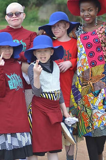
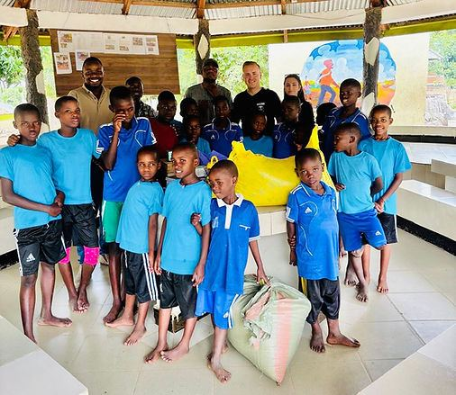
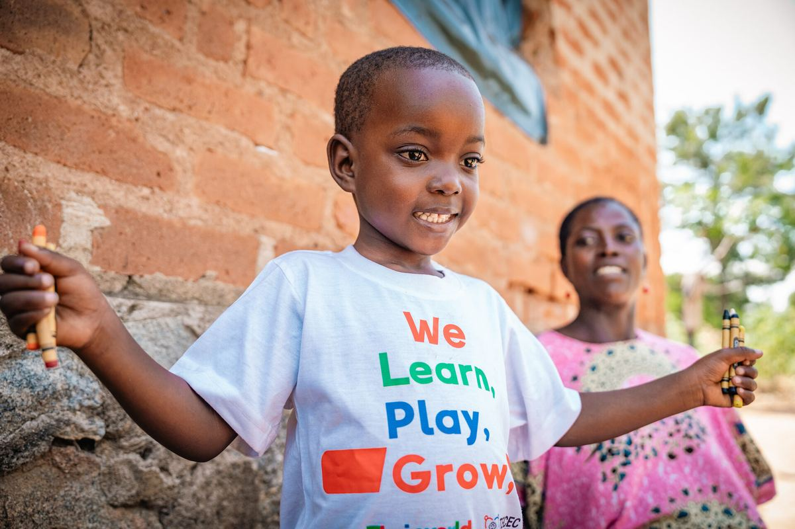

On Request, Not Fixed
This placement follows current content and outreach needs rather than a fixed schedule, so we arrange it individually — tell us your skills and availability when you apply.




VOT office & partner sites, Mwanza
1–24 weeks
18+
Coordinated directly with VOT's local team
This internship is for volunteers who want to put media, writing or communications skills to use in the field. You'll support VOT and partner organisations with photography, writing, and outreach content — things like documenting what's happening across VOT's placements, writing up volunteer stories, and helping partner organisations with their outreach and social content.
Because this placement is on request rather than a fixed program, it's arranged individually around current needs at VOT and its partners at the time you apply. It's a good fit for journalism, media studies and communications students who want practical, real-world content experience alongside VOT's local team in Mwanza.
How It Works
This placement follows current content and outreach needs rather than a fixed schedule, so we arrange it individually — tell us your skills and availability when you apply.
Help capture and write up what's happening across VOT's programs, from photography to volunteer story write-ups shared with future applicants.
Support VOT and partner organisations with outreach and social content, coordinated directly with our local team in Mwanza.
Good to Know
This program is on request rather than a fixed, always-running placement. We match volunteers to current content and outreach needs at VOT and its partners, so exact tasks and availability are confirmed once you apply.
It helps, but it isn't required. This placement suits journalism, media studies and communications students especially well — share your background and any relevant experience when you apply.
Yes — many volunteers combine this with another program such as Community or Education, documenting that placement as part of their communications work. Tell us your interests when you apply.
In Their Words
"The support from the local team was outstanding from the moment I landed at the airport. They helped me navigate the language barrier and made me feel right at home in Rock City."
Laura Müller — Germany, VOT Volunteer
Contact Us
Tell us your interests and availability — our team will help match you with the right placement.